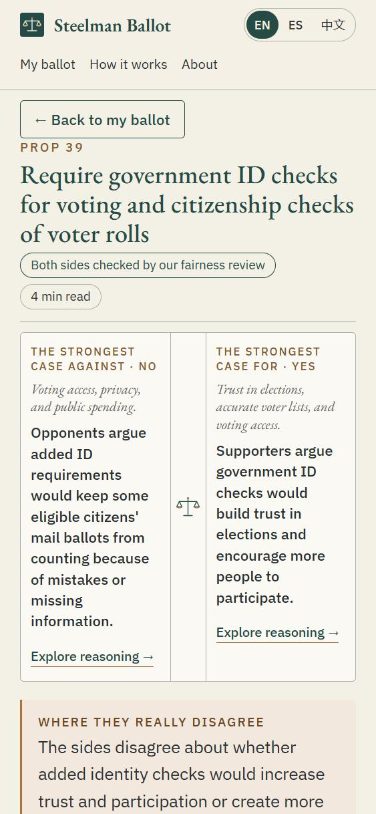
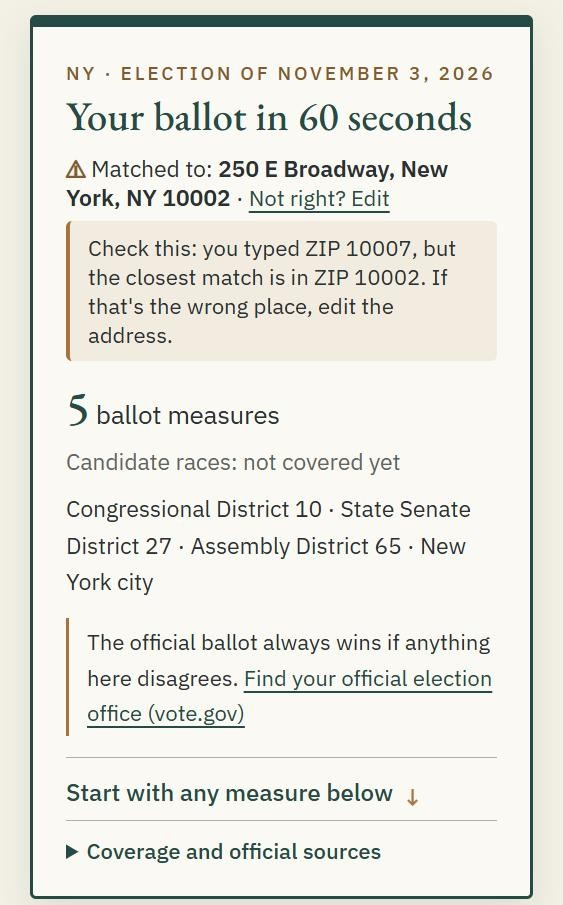
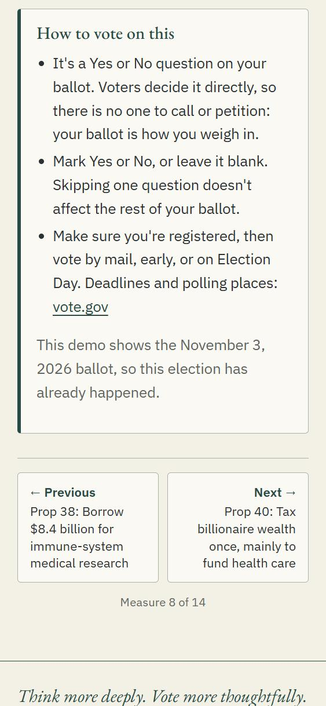
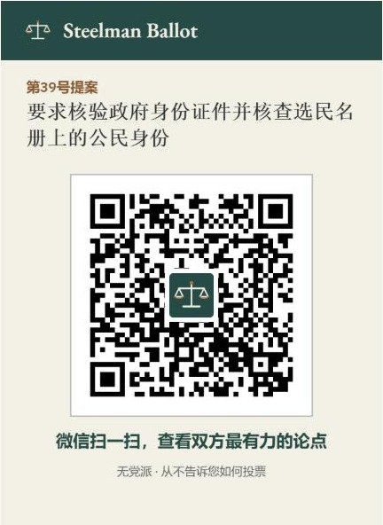

Enter an address or ZIP code and see what's on your ballot, with each side of every measure stated at its strongest (a steelman), checked by a second AI, in plain English, Spanish or Chinese, and never a recommendation on how to vote.
Who has this problem? Every voter who faces ballot measures. In the November 3, 2026 election, a California voter decided 14 statewide propositions, a Massachusetts voter 9 statewide questions, and a New York City voter 5 charter proposals, on top of candidate races. These are real laws and budgets: Prop 1 alone would authorize $11.25 billion in borrowing.
How do they deal with it today? Mostly three ways, each with a cost:
The official voter guide. Complete and authoritative, but long. We counted the words a California voter would need to read for just the summary, the nonpartisan analysis, and the arguments and rebuttals of the 14 propositions: 35,078 words, about 2 hours 27 minutes at an average adult reading speed of 238 words per minute (Brysbaert, 2019), before any of the legal text. The arguments in it are written by the campaigns to persuade, and often attack the other side's motives.
Endorsements and ads. Fast, but they tell you what to think rather than why, and ads cite the weakest version of the other side.
Skipping or guessing. Voters who run out of time leave measures blank or vote on a headline alone.
Why should anyone care? When you only ever hear the weakest version of the other side, every decision looks obvious and every opponent looks foolish. Ballot measures rarely are obvious. A voter who has heard both sides at their strongest can test their own view against the best objection, and keep it, change it, or hold it more wisely. That is the idea behind the app's name and its motto: The strongest argument isn't always your own.
A strawman is the weakest version of a view, built to be knocked down: "Opponents just don't care about election fraud." A steelman is the strongest version, stated so well that its own supporters would say, "I wish I'd put it that way": "Opponents argue added ID requirements would keep some eligible citizens' mail ballots from counting because of mistakes or missing information."
Steelman Ballot gives every voter that second kind of briefing for every measure on their ballot, in about the time it takes to read a news article: each measure's top layer (both sides, the crux, the key evidence) reads in about a minute, and the full card in 3 to 4 minutes. All 14 California cards take 56 minutes in full, versus 2½ hours for the official text.
The home page explains the idea with a real example (Prop 39), showing a strawman and a steelman for both sides.
2. What is new here
What already exists. Ballot information is not a new idea, and some excellent tools exist:
Tool
What it does well
What it doesn't do
Official state and city voter guides
Authoritative text, nonpartisan fiscal analysis, both campaigns' arguments
Long; arguments are written by each campaign to persuade, not to be fair to the other side
Summaries and lists of pros and cons, but no test of whether each side's case is its strongest version
News outlet voter guides and endorsements
Readable explainers, local context
Endorsements tell you how to vote; coverage depends on the outlet
ChatGPT and other chatbots
Instant answers to any question
No guarantee of sources, no fairness check, can invent details, and every voter pays for a fresh answer
What this does that those don't.
A fairness test, not just a summary. Every card is written by one AI and then attacked by a second, different AI that plays a committed supporter of each side and scores whether that side "would sign this as our best case" (an Ideological Turing Test, after Bryan Caplan). Both sides must score 4 or 5 out of 5. A swap test checks the tone: if the Yes and No sides traded places, would either read warmer or more certain? Cards that fail are rewritten with specific fixes, or published with a visible "steelman unverified" badge. All 28 published measure cards passed.
On the merits only. The cards argue about what a change would do (benefits, costs, risks, who is affected) and never about the other side's motives, donors or party, which is exactly what campaign-written arguments tend to do. A code check rejects motive and funder attacks before a card is published.
Facts kept apart from arguments. Every claim is labeled Fact, Estimate (and whose) or Perspective and linked to the page it came from, so there is no false balance between a fact and an opinion.
Equal treatment by design. Same structure, space and tone for both sides; No always on the left and Yes on the right; no red or blue.
Built for real voters. English, Spanish and Chinese; mobile-first; shareable cards for WhatsApp and WeChat (always both sides together); a "How to vote on this" note on every card; and an address that is used once and never stored.
An economics that scales. Each card is researched once and shared by every voter it applies to, so a voter's lookup costs nothing in AI tokens (see Tokenomics).
Honest note: the idea of presenting "both sides" is not new, and official guides already print each campaign's argument. What is new is testing each side's case for strength and fairness before a voter sees it, holding it to the merits, and doing so cheaply enough to cover every measure on a ballot.
3. The agents
What each agent does, and its tools
Agent
Job
Tools
Model
Ballot Mapper (code, no AI)
Turns an address or ZIP into districts, then reads the list of measures from the official guide
U.S. Census geocoder; official-guide parsers for California (HTML), Massachusetts (official PDF, by page) and NYC Votes
None
Measure Analyst (the AI writer)
Writes the card: each side's steelman on the merits, the crux, the evidence, what would change, who is affected
fetch_page: a safe reader limited to an allowlist of official sites, respecting robots.txt, stripping hidden text and fencing page text as untrusted. Output validators check that every claim cites a page it actually read and every quote matches word for word
gpt-6-astra
Critic (the AI challenger)
Tries to break the card: scores each side 1-5 ("would this side sign it?"), runs the swap test, checks every claim against its source, and flags off-the-merits or loaded wording. Code checks run first (structure, equal length, reading level, motive language)
None: it receives the card and the same source text, so it judges only what the writer saw
gpt-6-luna (a different model from the writer)
Candidate Profiler
California statewide races: what the office does and each candidate's statement from the official guide, in official ballot order
fetch_page (same safe reader)
gpt-6-astra
Translator
Translates the parts a voter sees first into Spanish and Chinese
None; a code check rejects any translation that changes a number
gpt-6-luna
Grader (testing only, not in the app)
Scores finished cards against California's nonpartisan Legislative Analyst
None
gpt-6-astra
How they are organized
A fixed pipeline with one feedback loop: the writer hands a draft to the challenger, which either passes it or sends back numbered fixes. The loop runs at most three rewrites. Results are cached per contest, so the agents run once per measure, not once per voter.
Which models, and why
Writer: gpt-6-astra (OpenAI's reasoning model, medium effort). Writing a fair steelman from 2,000-3,000 words of legal and fiscal text is the hardest step. We tested the cheaper gpt-6-luna as the writer on the same three propositions: it passed the fairness review on 1 of 3 cards (astra: 2 of 3), had 96% of claims supported by sources (astra: 100%) and needed twice the rewrites (table in Tokenomics).
Challenger: gpt-6-luna. Deliberately a different model from the writer, so it doesn't share the writer's blind spots, and about 100 times cheaper per token. Judging is easier than writing, and the evidence shows it held up: an independent grader found 0 contradicted claims in the cards it passed.
Translator: gpt-6-luna. Translating short, structured text is easy; a code check guards the one thing that must not change (numbers).
Provider. The class Portkey gateway at first; when it hit the class's monthly limit mid-build, the app switched to a personal OpenAI key through one setting (OPENAI_API_KEY is used if present, otherwise Portkey).
One real run, step by step: California Prop 39 (voter ID)
This is the actual run that produced the published Prop 39 card, taken from its saved review notes.
Map the ballot. A voter enters 1315 10th St, Sacramento, CA. The app shows "✓ Ready" before they click. The Census matches the address to Congressional District 7, State Senate District 8 and Assembly District 6 in 0.7 seconds; the mapper reads the Secretary of State's guide and finds 14 propositions (figures 1-3).
Write (round 1). The writer reads three official pages for Prop 39 (title and summary, the Legislative Analyst's analysis, and the arguments and rebuttals) with fetch_page, and drafts the card.
Challenge (round 1): fail. The challenger, playing a committed supporter, scored the Yes side 3 out of 5: "it omits a prominent merits argument in the official Yes case: supporters say the existing mail-ballot signature process can delay results and put ballots at risk of rejection." The No side scored 4. It also caught a fidelity problem: the No side's line that "officials already verify voters" was too broad, because the analysis says mail-ballot signatures are checked but in-person signatures generally are not.
Rewrite. The writer received those numbered fixes and revised the card.
Challenge (round 2): pass. Both sides scored 4 out of 5, the swap test passed, and there were no fidelity problems. The challenger left one optional wording note (replace "falsely" with "making a false statement"). The card was published as "Both sides checked by our fairness review." The corrected fact is now the second evidence line (figure 5).
Translate. The translator produced Spanish and Chinese versions of the parts a voter sees first.
Cost of this run: 5 model calls (3 writer, 2 challenger), 32,881 input tokens (12,828 cached) and 8,285 output tokens, $0.25, in 96 seconds. Every later voter who opens Prop 39 reuses this card at no AI cost.
1. Address entry with the local "Ready" check and the privacy note.2. Real progress: districts (0.7 s), official guide (14 found), cards matched.3. "Your ballot in 60 seconds": the matched address, counts, districts.

4. Prop 39: each side's strongest case, No left and Yes right, verified badge.5. The crux, then labeled evidence with sources. Line 2 is the challenger's correction.6. What would change: today vs. if it passes, row by row, each sourced.
4. Tokenomics
All figures are measured from the token counts the agents recorded for every published card (python -m backend.eval.tokenomics, which writes output/eval/tokenomics.json). Prices are the published OpenAI API rates per million tokens: gpt-6-astra $10 input, $1 cached input, $50 output; gpt-6-luna $0.10 input and $0.50 output (no separate cached rate, so luna is charged in full). Prices are from third-party price trackers and should be checked against the OpenAI bill.
$0.30average per measure card (median $0.27)
$8.78all 36 published cards, 3 states
$0.00AI cost of one voter's ballot lookup
77%of the writer's input served from cache
Tokens per typical run (measured)
Run
Model calls
Input
Cached input
Output
Cost
Measure card, average of 28
7
44,507
25,407
7,649
$0.297
Prop 39 (the run above, 1 rewrite)
5
32,881
12,828
8,285
$0.246
Most expensive card (NYC Proposal 4, 1 rewrite)
18
136,510
100,612
11,387
$0.777
Race card, average of 8
2
4,005
2,486
799
$0.058
Translation (per card and language, 56 total)
1
1,071
0
916
$0.0006
A voter's lookup (address → ballot → cards)
0
0
0
0
$0
By model across all published cards: the writer (gpt-6-astra) used 137 calls, 920,738 input tokens (711,405 cached) and 108,532 output tokens, for $8.23; the challenger (gpt-6-luna) used 54 calls, 325,450 input and 105,635 output tokens, for $0.09. Output tokens are the writer's main cost: 66% of its bill.
Cost per run, per user, and at scale
Because cards are shared, cost depends on how many measures are covered and how often their sources change, not on how many voters use the app. In the month before an election, assume each card is re-researched up to twice when official sources change (the refresh policy only re-runs a card when a source page's fingerprint changes), so about three full builds: 3 × $8.78 ≈ $26 of AI per month for the three states. Hosting is free up to modest traffic; at 10,000 users, assume a small paid server of roughly $7 a month.
Scenario (election month)
AI
Hosting
Total
Per user per month
100 users, 3 states (this design)
$26
$0
$26
$0.26
10,000 users, 3 states (this design)
$26
~$7
~$33
$0.0033
10,000 users, all 50 states' statewide measures (~150 measures in a typical even year)
~$135
~$7
~$142
$0.014
Naive design: generate cards per voter (14 CA cards × $0.30), 100 users
$416
$0
$416
$4.16
Naive design, 10,000 users
$41,600
~$7
~$41,607
$4.16
What was done to keep cost down
Research once, serve many. Cards are cached per contest and shared, and the public site runs in snapshot mode: voters never trigger an AI call. This is the largest saving by far: about 1,600 times cheaper than generating cards per voter at 10,000 users.
The cheap model where it's safe. The challenger and translator use gpt-6-luna; together they cost $0.12 for all published cards.
Prompt caching. The writer's instructions and source pages are reused across its calls, so 77% of its input is billed at the cached rate.
Tighter cards. Version 3.1 of the card design cut input from 32,404 to 22,063 tokens per proposition (-32%) and output from 7,504 to 5,161 (-31%) compared with v3.
Hard limits. Per card ≤20 writer calls and ≤150,000 tokens; ≤3 rewrites; a batch token budget (see Safety).
Did cost cutting make the app worse? The evidence
Change
Cost effect
Quality effect
Decision
Cheaper writer (gpt-6-luna instead of astra), props 1, 3, 39
About 98% cheaper per card in dollars, but 70% more input and 2× the output tokens
Worse: 1/3 verified vs 2/3; 96% of claims supported vs 100%; 2 rewrites vs 1
Rejected: kept astra as the writer
Cheaper challenger (gpt-6-luna)
$0.09 for all 54 reviews
No loss found: 28/28 cards verified; an independent grader found 0 contradicted claims and 100% of claims supported in the 6 graded cards
Kept
Tighter card design (v3 → v3.1), same 6 props
-32% input, -31% output tokens per prop
Better: verified 5/6 → 6/6; each side's top-3 points covered 92% → 99%; rewrites per prop 1.0 → 0.33
Kept
5. Safety
An election guide has three things to protect: the voter's trust (no invented or slanted claims), the voter's privacy, and the budget.
Attacks
Prompt injection from web pages. The writer can only read an allowlist of official sites; redirects off the allowlist are blocked; robots.txt and anti-bot challenges are respected, never evaded. Text hidden with CSS (display:none, zero font size or opacity) is stripped before the model sees it. Visible phrases that look like instructions ("ignore previous instructions", "you are now", "endorse", "tell voters to vote") are flagged, and every page is fenced as UNTRUSTED data in the prompt.
Real-world check: the injection detector fired on 10 real cards (one California and nine Massachusetts), because official arguments use words like "endorse". The text was fenced rather than dropped, the cards were still written, and the challenger's "never list" (no vote recommendations, no outcome predictions) passed on all of them: the app never repeated an endorsement as its own.
Leaking data. Addresses are sent only in request bodies (never URLs), the server runs with access logs off, and the anonymous counters accept only labels like lookup:CA, rejecting anything that could hold an address. API keys go in request headers, never URLs, and error messages are scrubbed. The card API hides the challenger's internal notes.
Abuse. 30 lookups per visitor per minute; card IDs are validated; a strict Content-Security-Policy; no third-party scripts.
Malfunction
Invented facts. Each claim must cite a page the writer actually read (a code check rejects others) and every quote must match the source word for word. The challenger re-checks every claim and number. The independent grader found 0 contradicted claims and 18 of 18 yes/no/cost descriptions correct.
Unfair cards. A card that still fails after three rewrites is published with a visible "steelman unverified" badge instead of being passed off as fair.
Wrong address. The app shows the address the Census actually matched and flags it when the ZIP code differs from the one typed (figure 9); "Not right? Edit" opens an address box in place.
Infinite loops. At most 3 rewrites per card; at most 20 writer calls, 3 challenger calls and 4 translator calls per card.
The official ballot always wins: every ballot page says so and links to the voter's official election office.
Overspending
The public site cannot spend. It runs in snapshot mode (SNAPSHOT_ONLY=1): nothing a visitor does can trigger a model call.
Hard per-card limits: 150,000 tokens for the writer, 60,000 for the challenger, 40,000 per translation.
Batch budget: research runs stop before the next card once a token budget (default 1.5 million) is reached, and stop cleanly on a quota or billing error, keeping every finished card.
It worked in practice: when the class Portkey key hit its monthly limit mid-build, the batch stopped cleanly with all finished cards saved; the remaining cards ran later on a personal key.
Defenses working (tests and screenshot)
$ python -m pytest -q -k "hidden_text or visible_injection or fetch_tool_flags_planted or sabotaged
or rate_limit or addresses_never or claim_citing_unread or misquote
or error_message_never or lookup_counts_state" -v
test_hidden_text_removed_before_model_sees_it ........... PASSED
test_visible_injection_is_flagged ....................... PASSED
test_fetch_tool_flags_planted_page ...................... PASSED
test_claim_citing_unread_page_is_rejected ............... PASSED
test_misquote_is_rejected_and_exact_quote_accepted ...... PASSED
test_sabotaged_card_fails_code_checks ................... PASSED
test_rate_limit ......................................... PASSED
test_addresses_never_go_in_a_url ........................ PASSED
test_lookup_counts_state_only_never_the_address ......... PASSED
test_error_message_never_contains_key ................... PASSED
10 passed (full suite: 128 passed, all offline, no model calls)

9. Malfunction guard: "250 Broadway, NY 10007" was matched by the Census to 250 E Broadway, 10002. The app flags it instead of silently showing the wrong districts.

7. "How to vote on this": the next step, never which way. Then previous / next measure.

8. Sharing keeps both sides together: a WeChat image with the title and a QR code (scannable with the logo, tested with a QR decoder).
6. Impact
Measured on the system
2½ h → 1 minofficial text for 14 CA measures vs. one card's top layer
100%claims backed by the official guide (graded sample)
99%of each side's top points covered
3languages: English, Spanish, Chinese
Time. Reading the official summary, analysis and arguments for California's 14 propositions takes about 2 hours 27 minutes (35,078 words). The full Steelman Ballot cards take 56 minutes, and the top layer of each card (both sides, the crux, the evidence) about a minute, so a voter can triage a whole ballot in about 15 minutes and read deeply where it matters.
Quality. An independent AI grader scored 6 California cards against the Legislative Analyst's nonpartisan analysis: 100% of claims supported, 0 contradicted, 18 of 18 descriptions of what a yes vote, a no vote and the cost would mean correct, and 99% of each side's top three points (ranked from that side's own official argument, before the grader saw the card) covered. Average reading grade: 9.1.
Fairness. All 28 measure cards scored 4 or 5 out of 5 for both sides from a supporter's point of view.
Reach. Spanish and Chinese versions of every measure card; sharing built for WhatsApp and WeChat; mobile-first; no account and nothing stored.
Cost. Under a cent per user per month at 10,000 users, so a civic group, a library or a newsroom could run it for an entire state.
Real users
[To be added: user-testing results.] Sessions followed the script in docs/user_testing: each participant prepared for one measure by hand (any sources, up to 6 minutes) and one with the app, with the order rotated, then answered three comprehension questions per measure, rated confidence (1-5), rated fairness, and completed the UMUX-Lite ease-of-use questions.
Measure
By hand
With the app
Participants
n = __
Minutes to feel ready (median)
__
__
Comprehension (of 3 questions)
__
__
Confidence (1-5)
__
__
"Both sides were treated fairly" (1-5)
n/a
__
UMUX-Lite ease of use (0-100)
n/a
__
Quotes and what changed because of them (already shipped):
A tester whose first language is not English thought the site was a polling site. The home page now says "A guide to read before you vote, not a poll."
A native Spanish speaker said "argumento de acero / de paja" doesn't carry the idea. The Spanish and Chinese pages now keep the English words steelman and strawman, with the definition translated.
A tester was "pleasantly surprised and even impressed" that a second AI challenges the first. The How it works page now leads with the two AI roles.
Testers didn't see where to edit a wrong address. "Not right? Edit" now opens an address box in place.
7. Limits and next steps
What doesn't work yet
Coverage. Three states: California and Massachusetts statewide measures and New York City's proposals. Connecticut (no statewide questions in 2026; town questions not covered) is paused. Other states show districts and races only.
A look-back demo. It shows the November 3, 2026 ballot as it stood before the vote; the live research pipeline is built but the public site serves a snapshot.
Candidate races are thin. Only California's eight statewide offices have cards, and most candidates submitted no statement to the official guide.
Translation is partial. Spanish and Chinese cover what a voter sees first; the detailed evidence and sources stay in the official English.
The accuracy test is small and AI-graded. Six California cards, graded by an AI from the same model family as the writer; Massachusetts and New York have no independent answer key like California's Legislative Analyst. A human expert review would be stronger.
AI can still make mistakes. Every claim links to its source and every card has a "Report an issue" link, but a wrong claim could slip through.
WeChat. Sharing works through a QR image and links; opening directly inside WeChat or a Mini Program would need a registered WeChat developer account, and WeChat may warn about the free hosting domain.
With another month
All 50 states' statewide measures (about $45 per full build), then local measures from county guides, starting with the largest counties.
A human review panel: two reviewers from opposite sides sign off on a random sample of cards each week, with their scores published.
A larger user study: 30 or more voters, by hand vs. with the app, measuring comprehension, time and perceived fairness, with Spanish- and Chinese-speaking participants.
Full translation including evidence, plus Vietnamese, Korean and Tagalog, with Zalo and KakaoTalk sharing.
Live mode for a real election: daily refresh as election day nears, with a public changelog of what changed on each card and why.
Sources: official voter guides of the California Secretary of State (including the Legislative Analyst's analysis), the Massachusetts Secretary of the Commonwealth (Information for Voters) and NYC Votes; U.S. Census Bureau geocoder. Reading speed: Brysbaert, M. (2019), "How many words do we read per minute? A review and meta-analysis of reading rate," Journal of Memory and Language 109. Ideological Turing Test: Bryan Caplan; steelmanning and charity: Anatol Rapoport's rules, popularized by Daniel Dennett. Model prices: published OpenAI API rates as listed by price trackers, November 2026. All other numbers are measured from this project's own runs (output/eval/summary.md, output/eval/tokenomics.json) and can be reproduced with the commands in the README.